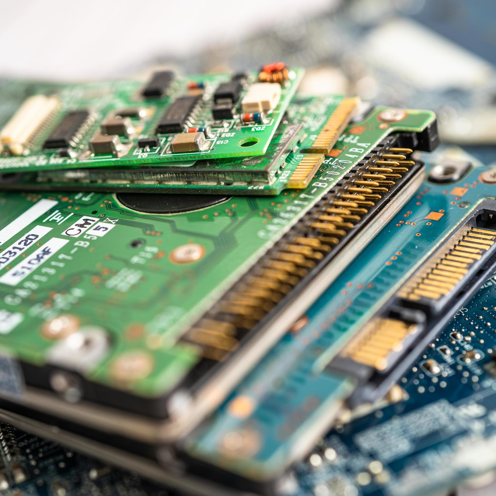
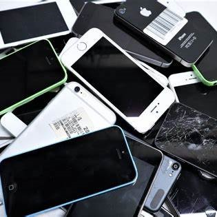
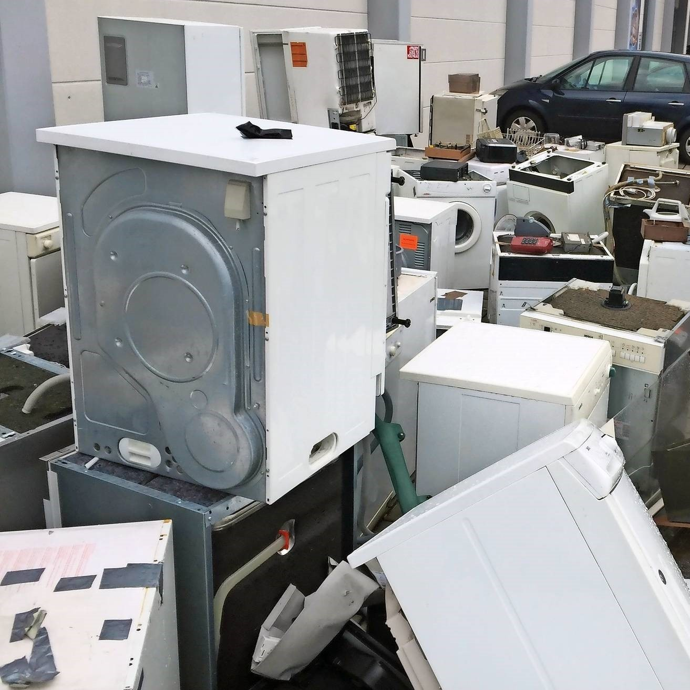
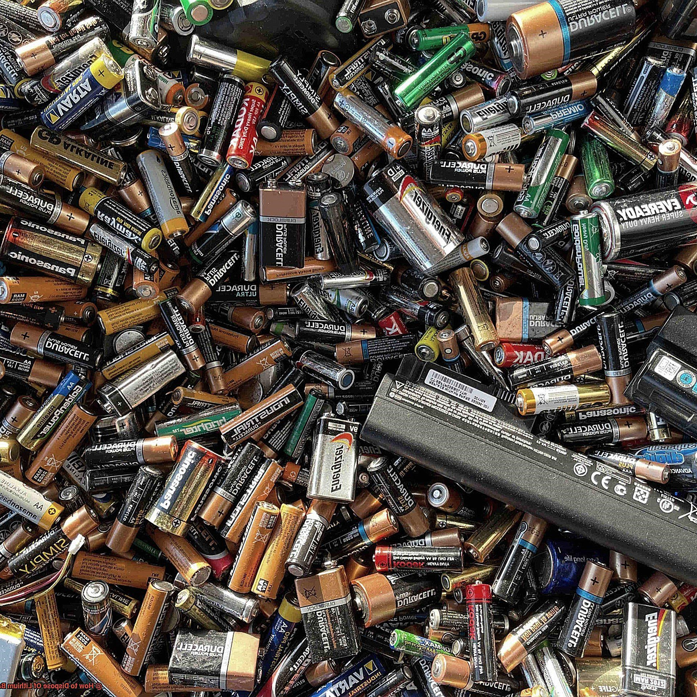

|
Colégio Estadual Barbosa Ferraz |
O Lixo Eletrônico
O lixo eletrônico tem se tornado uma preocupação crescente à medida que a tecnologia avança e a obsolescência dos dispositivos se torna mais rápida. Equipamentos como celulares, computadores e eletrodomésticos descartados sem um tratamento adequado podem liberar substâncias tóxicas no solo e na água, prejudicando o meio ambiente e a saúde pública. Além disso, a mineração de materiais raros para fabricar novos dispositivos contribui para a degradação ambiental. Para mitigar esse problema, é essencial adotar práticas de reciclagem, reutilização e descarte responsável. Programas de coleta seletiva e incentivos à economia circular podem reduzir significativamente os danos causados pelo lixo eletrônico e promover uma produção mais sustentável.
|  | O Destino das Peças de Computador no Lixo Tecnológico Os computadores e seus componentes representam uma grande parcela do lixo tecnológico. Quando descartados de forma inadequada, processadores, placas-mãe e memórias RAM podem liberar substâncias tóxicas no meio ambiente. Além disso, muitos desses materiais contêm metais preciosos como ouro, prata e cobre, que poderiam ser recuperados por meio da reciclagem. Empresas especializadas conseguem desmontar esses equipamentos e reaproveitar suas peças, contribuindo para a redução do impacto ambiental. O descarte correto e o recondicionamento de peças são fundamentais para minimizar os danos causados por esse tipo de lixo. |
O Problema do Lixo Tecnológico de Celulares e Tablets A rápida evolução dos smartphones e tablets faz com que milhares de dispositivos sejam descartados anualmente. O grande problema do lixo eletrônico desses aparelhos está na presença de metais pesados, como mercúrio e chumbo, que podem contaminar o solo e a água. Muitos fabricantes oferecem programas de reciclagem para incentivar o descarte adequado, garantindo que os componentes sejam reutilizados ou descartados de maneira segura. Para evitar o acúmulo de lixo eletrônico, é essencial prolongar a vida útil dos dispositivos por meio de manutenção e reuso. |
 |
|  | Eletrodomésticos Inteligentes e o Crescente Lixo Tecnológico Cada vez mais lares adotam eletrodomésticos inteligentes, como geladeiras conectadas, máquinas de lavar automatizadas e TVs de última geração. No entanto, esse avanço tecnológico também gera um novo desafio: o descarte desses equipamentos quando se tornam obsoletos. Muitos desses aparelhos possuem circuitos eletrônicos e baterias que podem contaminar o meio ambiente se descartados de maneira inadequada. Empresas e governos precisam desenvolver políticas de coleta e reciclagem para evitar que esses dispositivos acabem em aterros sanitários, comprometendo a sustentabilidade. |
Baterias e Componentes Eletrônicos: O Impacto do Descarte Indevido As baterias são uma das partes mais problemáticas do lixo tecnológico. Presente em celulares, laptops, relógios inteligentes e até veículos elétricos, elas contêm metais altamente tóxicos que, se descartados incorretamente, podem poluir o meio ambiente. O descarte indevido pode gerar riscos de explosões e contaminação química. A reciclagem de baterias é essencial para evitar a extração excessiva de metais como o lítio e o cobalto, contribuindo para um processo produtivo mais sustentável. |
 |